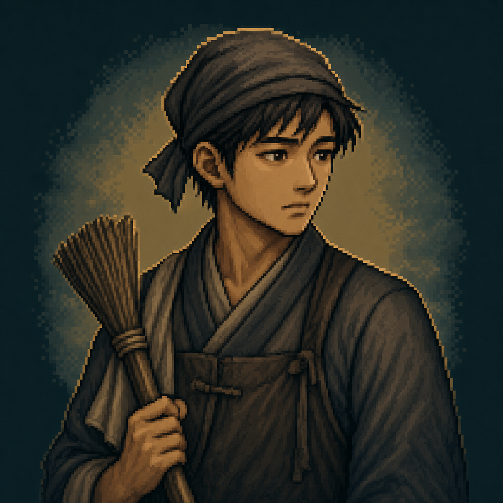
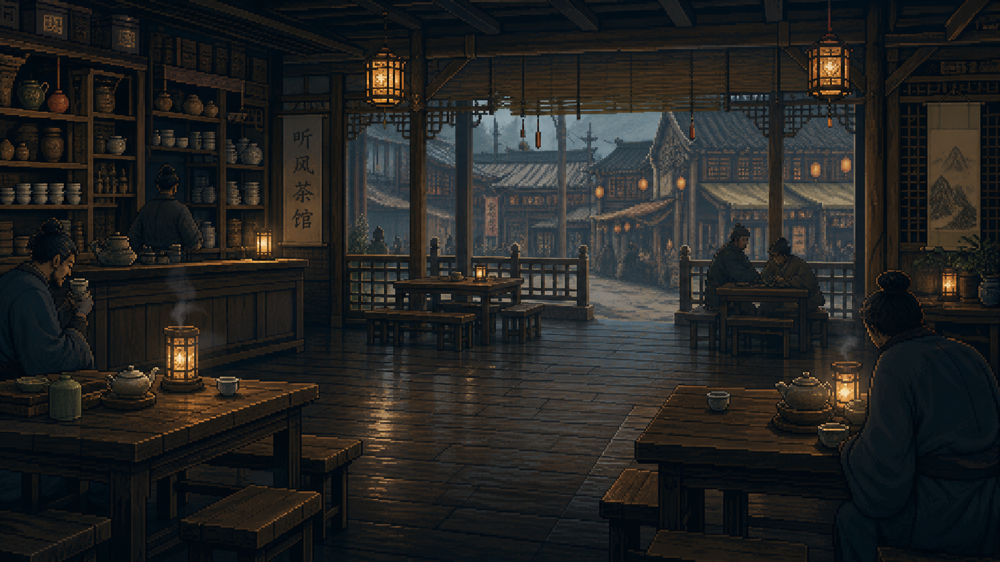
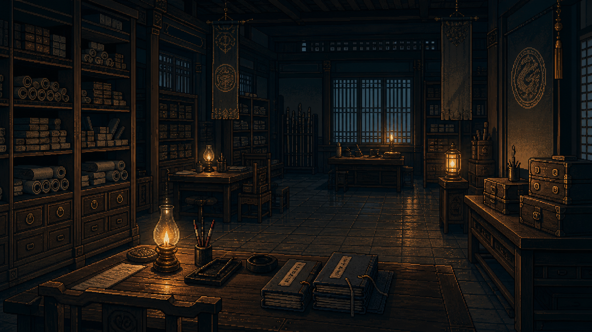

庆余年 · 水下
每部剧都是一座冰山。你看到的，只是水面以上。
| 作品名称 | 庆余年 · 水下 |
| 参赛赛道 | 命题赛道 · 赛题1：用 AI 玩转出圈交互叙事，解锁长视频沉浸式新体验 |
| 产品形态 | 腾讯视频长视频 IP 的 AI 衍生交互层 |
| 选手姓名 | （请填写） |
| Demo 链接 | （请填写） |
剧播完后，用户的延展消费（搜解析、看二创、补考据）几乎全部流向站外。腾讯视频承担了核心内容投入，却缺少一个承接"剧后消费"的站内产品形态。
《庆余年 · 水下》是一个 AI 衍生交互层：用户以小人物视角进入剧集世界，主线由原作锁定不可改写，用户通过四个"手电筒"工具选择往哪个方向看得更深。AI 在每一刻自主判断当前场景"水下有没有东西"，并实时生成不可能预写的纵深内容。选择是手电筒，不是方向盘。
核心机制与 IP 内容解耦，可复用到腾讯视频整个 IP 库。
序章：一个判断
赛题问的是：AI 原生时代"看内容"这件事的终极形态。
我们的判断是：AI 给长视频带来的不是"更多自由度"，而是"更多纵深"。
每一部剧都是一座冰山。观众看到的是水面以上——剧本写好的台词、镜头拍下的画面、剪辑保留的镜头。水线之下还有一整座山——角色没说出口的潜台词、没被拍到的日常侧面、没被展开的世界细节、主线之外的边缘故事。这些在编剧脑子里存在过，受限于时长和镜头语言，最终没能浮上水面。AI 不改变一部剧讲了什么。AI 让观众有能力往水下看。
基于这个判断，我们做了《庆余年 · 水下》——一个腾讯视频长视频 IP 的 AI 衍生交互层。看完剧，用一个小人物的视角"活"一遍那些镜头没拍到的故事。固定的是世界（主线由原作锁定），自由的是你的眼睛（你选择往哪里看得更深）。
下文将依次展开：用户与平台的双向痛点（模块一），产品方案与核心机制（模块二），AI 如何成为这个产品不可替代的核心（模块三），以及它如何作为一套可复用的 IP 衍生层框架在腾讯视频整个内容库中落地（模块四）。
模块一：用户洞察与问题定义
1.1 目标用户
腾讯视频拥有大规模付费会员基础。在这个用户池里，《庆余年 · 水下》优先服务的不是"随便点开一集当背景音"的泛用户，而是三类对 IP 有更高情感投入、更强分享意愿、更明显延展消费需求的人。
| 用户类型 | 典型行为 | 当前缺口 | 产品机会 |
|---|---|---|---|
| 分享型年轻观众 | 追剧时刷微博、小红书、朋友圈，喜欢发截图、金句、人物 cut | 分享素材多来自站外，腾讯视频只承担播放入口 | 用个性化结语和分享卡片，把"我在这个世界里的经历"变成可传播内容 |
| 深度 IP 粉丝 | 看解析、补原著、做考据、复看名场面 | 深度消费发生在豆瓣、B 站、小红书等站外社区 | 用 AI 生成镜头之外的纵深，让站内承接"看懂更多"的需求 |
| 剧荒回访用户 | 没有新剧追时，回到喜欢的老 IP 重刷片段或搜二创 | 回访路径零散，缺少新的官方体验入口 | 用小人物视角和多身份线，让老 IP 在剧荒期仍有新的消费理由 |
这三类用户未必占会员的大多数，但他们往往贡献了更高的停留、复看、讨论和传播价值。他们也是腾讯视频最不应该流失、却最容易被站外社区承接走的用户。《庆余年 · 水下》就是为这群人做的。
1.2 用户洞察：用户想要的不是自由度，是纵深
在定义产品方向之前，我们先排除了三种看似合理但方向错误的思路，最终锁定了真正的用户需求。
排除一：分支选择叙事。 Netflix 的 Bandersnatch 和互动影游把"交互"理解为不断选择路径。但观众看剧的核心状态是连续沉浸，频繁选择会把用户从"观看者"变成"路径判断者"，把看剧变成做题。AI 让分支更多、更动态，并不能解决这个根本问题。
排除二：让用户当编剧。 Fable 的 AI 流媒体 Showrunner 让用户写 prompt 生成新剧情。它验证了用户对"在喜欢的世界观里看到新内容"有真实欲望；但也暴露了：大多数观众不想当编剧。写 prompt、设定目标、决定人物命运，本质是创作，不是消费。
排除三：把长视频变成别的媒介。 有人试图把长视频变得更短（切成解说）、更刺激（变成游戏）、更高自由度（变成开放世界）。但长视频在所有内容形态中真正不可替代的优势，恰恰是连续叙事、角色厚度和情绪沉浸。AI 应该放大这种纵深，而不是用别的内容形态替代它。
排除这三条路后，核心洞察浮出水面：
| 洞察 | 用户现象 | 产品机会 |
|---|---|---|
| 看完不等于消费结束 | 用户看完正片后继续搜解析、看二创、补原著、读考据 | 剧后消费应该被腾讯视频站内承接 |
| 用户想探索，不想改写 | 观众想"再多看看这个世界"，而不是"我来决定接下来发生什么" | 交互应从"改写剧情"转向"探索纵深" |
| IP 长尾正在外溢 | 讨论、二创、复看、角色解读主要沉淀在站外平台 | 腾讯视频需要一个官方、个性化、可分享的 IP 衍生层 |
1.3 痛点（双向）
这里是这个产品的核心立论。我们不只是在解决用户的体验问题，更是在解决长视频商业模式中的一块结构性缺失。这两个痛点其实是同一件事的两面。
用户侧：消费周期被剧集长度强行截断
观众和一部剧的关系，并不在最后一集播完时结束。一部真正打动人的剧，会在观众脑子里继续运转——继续猜想、继续回味、继续怀念、想要二刷。但当下的产品形态是：剧播完，App 关掉，关系就结束了。
观众用来弥补这种落差的行为路径是：暂停腾讯视频，打开豆瓣搜剧评，打开小红书看二创，打开微博刷人物 cut，打开 B 站看 up 主的角色解析。这不是少数核心粉的小众行为，而是许多深度观众都会经历的剧后消费路径。用户的延展性消费需求是真实的、强烈的、可被产品承接的——只不过它长期发生在腾讯视频之外。
平台侧：生产周期与消费周期严重不对等，长尾价值全部外溢
长视频是所有内容形态中生产投入重、开发周期长、集中消费窗口短的那一种。但真正关键的不是这个不对等本身，而是接下来这件事——
腾讯视频主要享受到的是"播出窗口期"的消费红利。 剧播完之后，IP 进入长尾期，但围绕这部剧的很多社交资产——讨论热度、二创流量、剧粉社区、考据生态——都沉淀在豆瓣、小红书、微博、B 站。承担核心内容投入和分发的平台，只享受到相对集中的播放消费；剧播完之后的大量延展价值，流向了别人的池子。
这意味着：
- 平台投入的内容成本只能在播出窗口内变现
- 围绕一部 IP 自然形成的社交势能与平台无关
- 用户对 IP 的情感深化、复看欲望、"住进世界观"的需求，没有任何站内出口可以承接
- 赛题原题里反复提到的"出圈"——出圈的目的地几乎都是别的平台
这不是体验优化能解决的问题。这是长视频商业模式中缺失的一块产品——专门用来在剧播完后的长尾期，把延展性消费需求承接在站内的产品形态。《庆余年 · 水下》就是为这一块缺失而设计的。
1.4 使用场景
场景一：意犹未尽 —— 刚刷完，不想离开
用户刚看完《庆余年第二季》最新一集。关键剧情刚发生（比如牛栏街刺杀、滕梓荆死了），她情绪还满着，但下一集要等一周。过去她会怎么做：暂停 App，打开豆瓣或小红书搜讨论。现在腾讯视频会在播放页底部推送一个入口——「进入庆余年 · 水下」。她点进去，选择"以茶馆掌柜的视角再看一遍牛栏街刺杀"。她在 App 内完成了一段新的沉浸体验，没有立刻跳出。这段原本可能属于豆瓣和小红书的剧后消费，现在留在了腾讯视频。
场景二：剧荒回访 —— 回到喜欢的世界
用户最近没有新剧追。打开腾讯视频，习惯性地在首页滑一滑，没有想看的就关掉。但他突然想起——"水下"里他还没玩过鉴查院文书的视角。他点进去，又在那个世界里完成了一段新的体验。这是衍生层对会员留存最直接的价值——它让 IP 在剧荒期依然能产生消费。
场景三：被朋友带入 —— 反向激活新观众
用户的朋友在朋友圈发了一张水下生成的分享卡片：「我在范府当杂役，今晚月色很好，范少爷站在院子里很久没说话——我看到了和电视里完全不一样的他」。用户没看过《庆余年》，但这段文字勾起了她的好奇。衍生体验反向把新用户带回了主内容。
这三个场景共同勾勒出这个产品对腾讯视频的真实价值：它把"剧播完之后"的所有用户行为路径，从站外拉回到了站内。
模块二：产品方案设计
2.1 产品概述
《庆余年 · 水下》是一个长视频 IP 的 AI 衍生交互层。它不是另一部剧，不是一个游戏，不是一个聊天工具。它是搭在原作之上的另一层产品——观众看完剧之后，进入这部剧的世界，用一个小人物的视角"活"一遍那些镜头没拍到的故事。
固定的是世界，自由的是你的眼睛。选择是手电筒，不是方向盘。
这不是宣传语，这是一条严格的产品边界：
- 主线固定——原作锁死，用户的任何动作都不会改写剧情走向、不会改变结局、不会让滕梓荆活下来。
- 介入是稀疏的、有重量的——用户不需要每隔几秒做一次选择。大多数时候在"看"，介入只发生在用户主动选择"我想看得更深一点"的时候。
- 介入决定的不是"接下来发生什么"，而是"我想从哪个角度看见什么"——用户的角色是居民和观察者，不是编剧。
2.2 核心机制
机制一：小人物身份选择
用户进入产品后，先选择一个站在主线边缘的小人物身份。每个身份有明确的位置、信息权限和"水下视角"：



| 身份 | 位置 | 能照见的水下 |
|---|---|---|
| 周福生 · 京都茶馆掌柜 | 牛栏街 · 听风茶馆 | 朝堂风云的民间回响、各方势力暗线交汇 |
| 孙有德 · 鉴查院末等文书 | 鉴查院 · 文书房 | 情报机构内部的暗流、上层权力斗争的碎片 |
| 刘安 · 范府杂役 | 范建府邸 | 范闲不为人知的日常、府中人物的真实面貌 |
身份的设计核心不是"角色卡牌"，而是视角约束——这个身份能听到什么、看到什么、知道什么、不能知道什么，全部由身份的位置决定。这是后续 AI 判断"水下是否有内容"的关键依据。
机制二：视觉小说式主线播放
主线由原作锁定的故事节点组成（每个身份 7 幕）。每一幕被拆成有节奏的几个 beat 自动推进：
- 镜头：第三人称客观叙事，提供场景信息
- 角色对话：原作角色的台词，带头像和情绪标签
- 你的感知：第二人称写"你"作为这个小人物此刻的内心活动
- 水下回响：上一幕用工具看到的纵深，会作为新的 beat 渗透回当前场景
整个体验默认自动播放，用户也可以切到手动模式。这种节奏让用户大部分时候处于"被剧带着走"的状态——和看剧本身的心理状态一致。



三条身份线对应的场景：听风茶馆 · 鉴查院文书房 · 范府庭院
机制三：四把手电筒——AI 自主判断纵深
底部常驻 4 个工具，对应四种不同的纵深：
| 工具 | 含义 | 通用能力 |
|---|---|---|
| 🔊 侧耳 | 听见低语、潜台词、信息差 | 听觉纵深 |
| 💭 追忆 | 连接前因、旧事、历史线索 | 时间纵深 |
| 👁 细看 | 观察物件、表情、动作异常 | 视觉纵深 |
| 👣 跟随 | 跟着某人离开当前视角 | 空间纵深 |
四个工具任何场景都能点。但它们不是预设好的开关，AI 会基于"当前身份、当前场景、历史选择"判断此刻这个工具能不能看到东西：
- 有水下时：返回一组有节奏的"水下片段"——可能是镜头、角色对话、你的感知或短暂内心，让用户像经历一小段补充戏一样看见纵深
- 没有水下时：返回 30-50 字的自然空结果——"你侧耳听了听，只有寻常的闲聊声"
默认是"没有发现"。系统在 prompt 层面对 AI 强约束："不要为了显得聪明而硬挖信息"。这个设计是为了保护两件事——
1. 让"发现纵深"这件事真正有重量（每次有发现都不是流水账）
2. 让小人物的视角真实（不是上帝视角，看不到不该看的东西）
在呈现上，工具结果不是一段分析文字，而是嵌在当前场景里的短暂补充片段。它不改变主线，也不把用户带到另一个页面；它只是让当前这一幕多浮出一层信息，看完后自然回到原来的叙事节奏。
机制四：水下回响——发现会持续渗透
用户用工具发现的内容不会孤立闪现完就消失。它会被记录下来，在下一幕作为"水下回响"自动渗透回场景：
「方才『侧耳』照见的细节，让此刻多了一层意味：……」
这意味着前面的发现会改变后续场景的意味。同一段对话，没解锁过纵深的人和解锁过的人读到的厚度不一样。这是这个产品最贴近"真正的叙事纵深"的机制——不是堆砌孤立的彩蛋，而是让发现累积成对世界的理解。
机制五：结语生成、分享卡片与旅程回看
走完一条身份线后，AI 基于用户经历的所有场景 + 解锁的所有纵深，为这个用户个性化生成一段结语 + 一句分享文案：
例：「我在范府做杂役，看见少爷眼神变了」
每个用户的水下经历都不同，所以每个人的分享文案也不同。结尾页会把这句话组织成一张可传播的分享卡：它不是普通的通关截图，而是把用户身份、关键场景和个人化经历压缩成一个可以被朋友理解的微型故事。
分享卡下面还有一次"旅程回看"：系统会把用户这次解锁过的纵深发现整理出来，让用户回看自己这次到底看见了哪些水下。
结尾还有一个明确的引导："同一个世界，换一个身份，会看到完全不同的水下"——直接激发重玩。
2.3 主体验流：以茶馆掌柜走过牛栏街刺杀为例
下面以"周福生"这条线为例，走查一次完整的主体验。这是 Demo 录屏会展示的那条主线。
如果用户切换身份（比如鉴查院文书孙有德），同一个事件会在另一组 7 幕里以完全不同的视角展开——刺杀那一刻在茶馆是"街上人来人往突然变成混乱"，在鉴查院文书房是"楼上传来急促脚步声、所有人的脸色都变了"。这是 Demo 在 3 分钟录屏里要展示的核心证据：同一件事，水下的角度可以完全不同。
2.4 与现有方案的差异化
| 现有方案 | 代表 | 用户身份 | AI 的角色 | 我们的判断 |
|---|---|---|---|---|
| 分支选择叙事 | Bandersnatch、橙光 | 决策者 | 路由器 | 把观众变成产品经理；打断沉浸 |
| AI 角色对话 | Character.AI | 对话发起者 | 角色扮演 | 角色脱离故事语境 |
| 用户写 prompt | Fable Showrunner | 编剧 | 内容生成器 | 大多数观众不想当编剧 |
| 站外二创 | 豆瓣/小红书/B站 | 阅读者 | 不参与 | 内容静态、不在站内 |
《庆余年 · 水下》的位置：用户身份是居民/观察者，主线由原作锁定，AI 是纵深判断者+实时生成者，内容为 AI 实时个性化生成，落地在腾讯视频站内。这五条同时成立，构成了一个目前还没有被占据的产品位置。
模块三：AI 原生能力说明
这个模块是这份文档里我们最希望评委逐字阅读的部分。AI 在这个产品里不是装饰，不是宣传词，不是在已有产品上叠加的"智能小工具"。这个产品离开 AI 不可能存在——下面说明为什么。
3.1 AI 核心能力
能力一：跨域叙事结构理解
AI 需要在每一次工具调用前，整合：庆余年世界观规则、8 个核心角色的性格/动机/关系、用户当前身份及信息权限边界、当前场景全文、之前的场景摘要和纵深发现、此刻选择的工具的语义边界。这是一个多源叙事上下文的整合任务。
能力二：纵深存在性判断（hasDepth 决策）
这是最关键、最非常规的 AI 能力。传统 AI 应用倾向于"无论什么输入都给内容丰富的输出"。我们反过来——默认不生成内容。只有同时满足三个条件才允许 hasDepth=true：
- 当前场景文本中存在明确的触发物（不是 AI 凭空想象的）
- 用户选择的工具能自然触达这个触发物
- 用户的小人物身份有权限看见或听见这个信息
这个能力的本质是：让 AI 学会克制——不是每次都要生成精彩内容，而是在没有可挖之处时承认没有可挖之处。
能力三：上下文敏感的纵深生成
当 hasDepth=true 时，AI 生成的是第二人称的具体感官——"你听到……"、"你看到……"、"你想起……"，必须与世界观一致，且必须考虑用户之前的发现。
能力四：纵深内容的叙事化组织
AI 需要判断哪些信息通过环境出现、哪些通过角色说出口、哪些通过小人物的感知出现、哪些只能点到为止。水下不是资料卡，而是一段用户可以顺着看下去的补充叙事。
能力五：个性化结语合成
AI 综合所有场景 + 所有纵深，为每个用户量身合成结语和分享文案。分享卡片本身成为可传播的微叙事。
3.2 这个产品离开 AI 还能成立吗？
赛题模板里有一个关键评分项："去掉 AI 这个产品还能成立吗？" 正面回答：
纵深内容的枚举规模：3 身份 × 7 节点 × 4 工具 = 84 个工具点，每个还依赖用户历史路径——人工撰写量会快速膨胀到不可维护。但更关键的是：即使写完了，体验依然会失败。
第一，失去"自然空结果"。 预写的"没有发现"是固定字符串，用户用一两次就会识破。AI 实时生成的"具体的没有发现"才让用户相信这是真实运转的世界。
第二，失去历史依赖。 前面发现的内容应该让后续场景读起来不一样——这种累积的叙事厚度只能由 AI 实时整合历史上下文生成。
第三，失去身份的真实位置。 不同身份的视角、信息权限、认知边界完全不同，靠人工每个身份都要重写。
第四，失去可扩展性。 框架可复用到整个 IP 库——如果每部剧都要人工撰写，商业模式不成立。
离开 AI，《庆余年 · 水下》不是"会变得更差"，而是"不可能存在"。
3.3 技术方案
系统架构
整个产品采用 Next.js + Vercel 的全栈一体化架构：
React 客户端
/api/tool · /api/epilogue
OpenAI 兼容协议
模型层采用 OpenAI 兼容协议，可在不改业务代码的前提下切换底层模型（当前 MiniMax-M2.7，可切换 DeepSeek、GLM、腾讯混元等）。
分层 Prompt 架构
这种分层让"框架"和"IP 内容"彻底解耦——换一个 IP，只需要替换 Layer 1-3，Layer 4-6 完全复用。
关键设计约束
| 约束 | 设计目的 |
|---|---|
| 默认 hasDepth=false | 防止 AI 硬挖信息，保护"发现"的重量感 |
| 身份权限边界 | 小人物不允许出现上帝视角 |
| 严格 JSON + 双重解析 fallback | 兼容模型偶发异常输出，确保前端永不崩 |
| 主线只读 | 不允许编造原作不存在的角色或事件 |
| 工具语义匹配 | "侧耳"不返回视觉信息，"追忆"不返回当下事件 |
一次实际调用的例子
输入上下文：用户身份 = 周福生（茶馆掌柜），当前场景 = teahouse_02「熟客议论」，用户操作 = 点击「侧耳」
AI 输出（实际返回的 JSON）：
{
"hasDepth": true,
"content": "你借着续水靠近那两个户部小吏，听见他们提到长公主府近日有动静……",
"depthTag": "鉴查院暗流",
"beats": [
{ "kind": "narration", "text": "你借着续水绕到那两个户部小吏背后，壶嘴的白气正好遮住你的眼神。" },
{ "kind": "dialogue", "speaker": "户部小吏甲", "mood": "压低声音",
"text": "长公主府的人这几天在动，反而陈萍萍那边一点声响没有，这才更怪。" },
{ "kind": "perception", "text": "你低头给他们续上水，没敢抬眼。茶馆里这一瞬间安静得不自然。" }
],
"innerThoughts": [
{ "character": "户部小吏甲", "thought": "这话再说下去回头要出事——茶馆里耳朵多。" }
]
}
这段纵深会作为当前场景里的短暂补充片段出现，用户看完后回到主线。这条发现被存入 depthHistory，下一幕作为「水下回响」beat 自然出现。前端配 loading 状态："你屏住呼吸，等那点声响浮上来"——把等待时间变成体验的一部分。
AI 不创造世界，AI 让观众能多看见这个世界一层。
模块四：加分项
4.1 落地可行性
4.1.1 我们做的不是 Demo，是框架
我们从一开始就把"机制层"和"内容层"严格分开——框架负责体验机制，IP 内容包负责具体世界：
框架（不依赖任何具体 IP，可直接复用）：视觉小说式播放引擎、固定主线 + AI 打光的协议、四把手电筒工具的语义体系、AI 调用与输出协议、水下回响的累积机制、结语与分享卡片的合成机制。
IP 内容包（每接入一个 IP 替换一次）：世界观 brief、核心角色档案、用户身份设定、固定主线剧情节点、视觉素材包。
4.1.2 在腾讯视频内容库里的迁移路径
| IP 类型 | 代表作品 | 可设计的小人物身份 | 水下主题 |
|---|---|---|---|
| 古装权谋 | 庆余年、繁花、长相思 | 仆役、店家、文书 | 朝堂风云的民间回响 |
| 悬疑 | 三体、漫长的季节 | 邻居、值班员、地方记者 | 案件边缘的琐碎线索 |
| 都市 | 玫瑰的故事、与凤行 | 同事、服务员、物业 | 人物关系的暗流 |
| 综艺 | 五十公里桃花坞 | 后期剪辑、工作人员 | 节目素材的另一条叙事线 |
| 动漫 IP | 斗罗大陆 | 学院旁观学生、商队伙计 | 大事件的边缘视角 |
4.1.3 接入腾讯视频站内的具体路径
落点一：剧集播放页底部入口——剧集每集播完时推送「进入水下」入口。
落点二：会员特权点位——水下作为 VIP 增值特权，非会员能看主线但不能解锁纵深。
落点三：IP 专题独立 Tab——把"水下"作为 IP 聚合 Tab 的核心模块。
落点四：分享卡片回流——分享到微信/朋友圈/小红书后直接回到腾讯视频。
4.1.4 当前 Demo 是方法论选择，未来空间在哪里
当前 Demo 的极简形态（像素风 + 视觉小说 + 公开资料）恰恰是最有说服力的状态——它说明"小人物视角 + AI 自主判断纵深 + 主线锁定 + 水下回响"这套机制本身就足够支撑产品成立。资源升级是放大器，不是必要条件。
| 升级维度 | 当前 Demo | 中期 | 远期 |
|---|---|---|---|
| 产品形态 | 像素风 + 视觉小说 | 半实拍 + 局部动画 + 配音 | 3D 实时渲染 |
| 叙事素材 | 公开资料 | 官方剧本 + 编剧未删减素材 | 编剧同步创作"水下文档" |
| 角色覆盖 | 小人物 | 配角自身视角 | 用户驱动角色选择 |
4.1.5 演进路径
| 阶段 | 内容 | 成本 |
|---|---|---|
| 阶段一 · 单 IP 单事件试点 | 庆余年 · 牛栏街刺杀，3 个身份线（已完成） | 已落地 |
| 阶段二 · 单 IP 多事件包 | 庆余年完整衍生层，覆盖更多关键事件 | 内容生产 |
| 阶段三 · 多 IP 扩展 | 横跨多部头部 IP，建立内容包标准 | 流水线化 |
| 阶段四 · 站内深度嵌入 | 集成进剧集播放页、会员体系、IP Tab | 产品+工程 |
4.2 商业化思考
4.2.1 商业价值
| 商业价值 | 落地路径 | 价值锚点 |
|---|---|---|
| 延长 IP 生命周期 | 衍生层让 IP 在剧播完后持续产生消费 | 活跃消费窗口从"播出期"延展到"长尾期" |
| 拉高用户停留时长 | 剧播完后用户继续完成水下体验 | 直接增加广告库存与会员价值 |
| 降低剧荒期会员流失 | 剧荒期用户回到喜欢的世界观继续消费 | 改善 ARPU 与续费率 |
| 社交传播带动新用户 | 分享卡片成为 IP 出圈载体 | "内容反向引流"获客通道 |
| 会员特权差异化 | 水下作为 VIP 增值能力 | 强化付费动机 |
4.2.2 商业模式
短期：作为腾讯视频会员的增值能力（最低摩擦路径）。中期可演进出：单 IP 永久解锁、特殊身份付费解锁、IP 联动运营（新剧开播同步推出衍生层）、官方授权变现。
4.2.3 不做的边界
第一，不消解原作的作者性。 AI 不改写主线、不编造不存在的关键事件、不让"已经死的角色活下来"。
第二，不做信息茧房。 每一次发现基于"当前场景客观存在的触发物"，不是用户口味画像。
第三，不替代原作消费。 水下的价值是让看过的人看得更深，不是给没看的人提供"五分钟看懂庆余年"。
这三条边界让这个产品始终是 IP 的放大器，不是 IP 的替代品。
结语：长视频该被怎样改造
赛题问的是 AI 原生时代"看内容"这件事的终极形态。
我们注意到，这个时代有几种试图回答这个问题的方向。有人想把长视频做得更短、更刺激；有人想把长视频做成游戏；有人想让用户当编剧。每一种都有它的合理性，但每一种都在用别的内容形态替代长视频本身。
我们的判断是另一个方向。
长视频在所有内容形态里真正不可替代的，是叙事的纵深和角色情感的厚度。这是抖音做不到的，是 Character.AI 做不到的，是任何短视频或交互游戏做不到的。AI 进入长视频，不应该削平这种纵深，让长视频变得更像别的；AI 应该放大这种纵深，让长视频成为它本来就该成为的样子——一个观众可以"住进去"的世界。
观众想要的从来不是"我来决定接下来发生什么"。观众想要的是"我还想再多看看这个世界，看看那些镜头没拍到的地方"。
《庆余年 · 水下》是我们对这个问题的回答。
它不试图改造"看视频"这件事本身。它在剧播完之后开辟了一个新的入口——你看完了水面上的故事，现在可以进来，从一个角落里的小人物的眼睛，看到水面之下那座完整的冰山。
每一部剧都是一座冰山。
你看到的，只是水面以上。
文档完，期待评审。